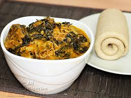

onugbu soup

Decription
Ofe Onugbo is a popular dish mainly amongst the Igbo People from the Estern part of Nigeria,
it is popular in Nigeria and can be served with any swallow but mostly served with fufu.
Oha Soup
- Bitter Leaves
- Oil
- Salt, Oil & Maggi
- Ogiri Igbo
- Uziza Leaves
- Meat & Fish
- Cryfish
- water
- Ade
Steps
- Cook the Ade till it become soft after that remove it and pound it till it form a liguid like texture
- Cook the Meat & Fish till it become soft to preferance
- Pound pepper and one bulb of onion or blend it
- Add 3 cubes of maggi & salt to taste
- Remove the cooked meat and Fish from the pot
- Add the Cryfish, a cube of maggi, the mixture of pepper and onion, Ogiri Igbo, Oil and salt to tast
- Afer the water is boiling add the pounded Ade. After the whole thing is well mixed
- Add the Meat and Fish after few minute add bitter leaves
- Allow to mix up for a minute or 2 remove from heat and serve with any swallow of your choice.